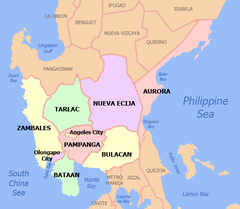

Central Luzon

Central Luzon, designated as Region III, is an administrative region in the Philippines, primarily serving to organize the 7 provinces of the vast central plains of the island of Luzon, for administrative convenience.
Provinces: show 7: Aurora; Bataan; Bulacan; Nueva Ecija; Pampanga; Tarlac; Zambales
Municipalities: 116
Central Luzon Covid Cases
| Region |
Cases |
Recovered |
Deaths |
Population |
| Central Luzon |
133K |
126K |
3,322 |
12,422,172 |